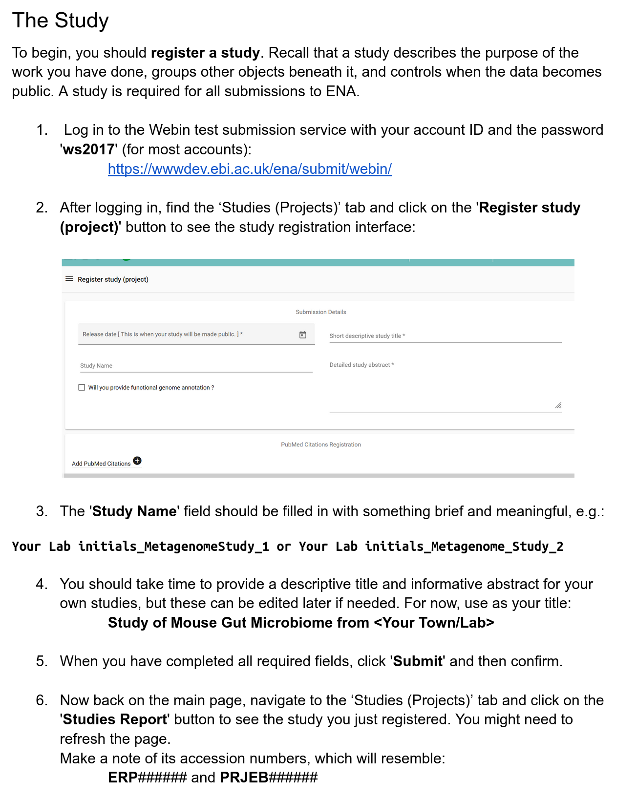
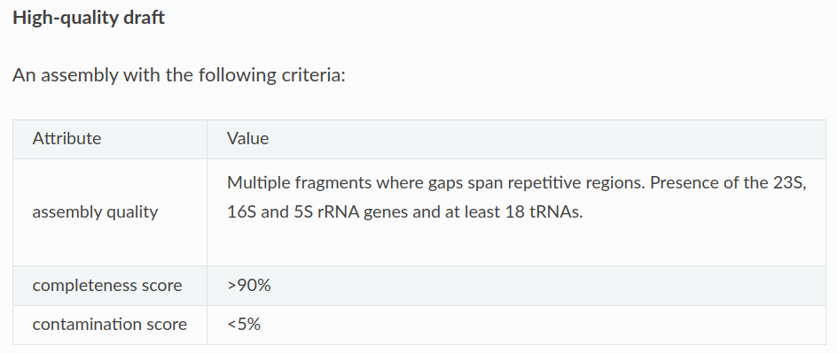

The genome_uploader: tutorial
![]()
This session will simulate genomes registration and submission with the genome_uploader, a tool developed within MGnify to facilitate the upload of bins and MAGs to the ENA (European Nucleotide Archive). If you are interested, you can find the genome_uploader code on github, on pypi and bioconda.
When you submit genomes to the ENA, you need to register a sample for every genome containing all the relevant metadata describing the genome and the sample of origin. The genome_uploader acts as the main linker to preserve sample metadata as much as possible. For every genome to register, you need an INSDC run or assembly accession associated to the genome in order for the script to inherit its relevant metadata. On top of those metadata, the script adds metadata specified by the user that are specific to the genome, like taxonomy, statistics, or the tools used to generate it. The metadata that ENA requires are descibed in the checklist for MAGs and for bins, respectively.
First, let’s access the exercise folder. Open a terminal and type:
cd course_dir/work_dir/Day_3/uploading_genomes_to_ENAYou will find a starting dataset of two genomes. Together with them, input_example.tsv is a table containing metadata about those genomes. It will like similar to this:
| genome_name | genome_path | accessions | assembly_software | binning_software | binning_parameters | stats_generation_software | completeness | contamination | genome_coverage | metagenome | co-assembly | broad_environment | local_environment | environmental_medium | rRNA_presence | taxonomy_lineage |
|---|---|---|---|---|---|---|---|---|---|---|---|---|---|---|---|---|
| L_sakei | path/to/L_sakei.fa.gz | SRR11910206 | megahit_v1.2.9 | metabat_v1.2 | default | CheckM2_v1.0.1 | 99.7 | 0.38 | 27 | marine sediment metagenome | False | marine | coast | coastal sediment | True | d__Bacteria;p__Firmicutes;c__Bacilli;o__Lactobacillales;f__Lactobacillaceae;g__Latilactobacillus;s__Lactobacillus sakei |
With columns indicating:
- genome_name: genome id (unique string identifier)
- accessions: run(s) or assembly(ies) the genome was generated from (DRR/ERR/SRRxxxxxx for runs, DRZ/ERZ/SRZxxxxxx for assemblies). If the genome was generated by a co-assembly of multiple runs, separate them with a comma.
- assembly_software: assemblerName_vX.X
- binning_software: binnerName_vX.X
- binning_parameters: binning parameters
- stats_generation_software: software_vX.X
- completeness:
float(optional field for bins) - contamination:
float(optional field for bins) - rRNA_presence:
True/Falseif all among 5S, 16S, and 23S genes, and at least 18 tRNA genes, have been detected in the genome (optional field for bins) - NCBI_lineage: full NCBI lineage - format:
x;y;z;.... The same organism can be described in two different ways: either in tax ids (integers) orstrings. For example, the lineage for E. coli can be:Bacteria;Pseudomonadati;Pseudomonadota;Gammaproteobacteria;Enterobacterales;Enterobacteriaceae;Escherichia2;1224;1236;91347;543;561;562
- metagenome: needs to be listed in the taxonomy tree here (you might need to press “Tax tree - Show” in the right most section of the page)
- co-assembly:
True/False, whether the genome was generated from a co-assembly. N.B. the script only supports co-assemblies generated from the same project. - genome_coverage : genome coverage against raw reads
- genome_path: path to genome to upload (already compressed)
- broad_environment:
string(explanation following) - local_environment:
string(explanation following) - environmental_medium:
string(explanation following)
According to ENA checklist’s guidelines, broad_environment describes the broad ecological context of a sample - desert, taiga, coral reef, … local_environment is more local - lake, harbour, cliff, … environmental_medium is either the material displaced by the sample, or the one in which the sample was embedded prior to the sampling event - air, soil, water, … For host-associated metagenomic samples, the three variables can be defined similarly to the following example for the chicken gut metagenome: “chicken digestive system”, “digestive tube”, “caecum”. More information can be found at ERC000050 for bins and ERC000047 for MAGs under field names “broad-scale environmental context”, “local environmental context”, “environmental medium”
If your genome was generated from raw reads available on the INSDC (including ENA and GenBank), the genome_uploader will automatically inherit relevant metadata for that sample to make. For example, if you are submitting a MAG generated from read SRR11910206, some of the sample metadata will be inherited for the genome sample registration (e.g. collection_date, isolation_source).
Take a look at the GCS MIMAG checklist as a reference. You will notice that bins and MAGs checklists are very similar, as mandatory fields are the same. You can compare it with the bins checklist yourself.
Registering and submitting genomes
As explained before, you need to perform 4 steps to submit bins and MAGs:
- Register a study
- Register binned and/or MAG samples
- Generate manifest files
- Submit assemblies with Webin-CLI
The genome_uploader takes care of the last 3 steps. 2 and 3 are executed together, while the third one needs an extra command to submit previously generated files to ENA servers.
Accessing yor Webin profile
Go to this spreadsheet and reserve a Webin profile
Registering a study

Registering MAG samples and generating manifest files
It’s time to launch the genome_uploader.
Replace ENA_WEBIN and ENA_WEBIN_PASSWORD with your own credentials, and the METADATA_FILE and CENTRE_NAME parameters below with the right file ones!!
export ENA_WEBIN="Webin-XXX"
export ENA_WEBIN_PASSWORD="Insert your password here"
# from the example_data folder:
../genome_uploader/genomeuploader/genome_upload.py -u UPLOAD_STUDY --genome_info METADATA_FILE --mags --centre_name CENTRE_NAMEWhere:
-u UPLOAD_STUDY: study accession for genomes upload to ENA (in format ERPxxxxxx or PRJEBxxxxxx)---genome_info METADATA_FILE: genomes metadata file in tsv format--mags: replace--magswith--binsto upload bins: so EITHER OF THESE for either bin or MAG upload--centre_name CENTRE_NAME: name of the centre generating and uploading genomes
The logging output from this command will tell you which metadata objects have been accessed, and also where the output files have gone. This should be the example_data directory, but it will also have created a MAG_upload directory.
Browse the files here to see the manifests that have been created, which combine the ENA metadata and the provided metadata (e.g. binning software).
You can find the manifests in the MAG_upload/manifest_tests folder where you launched the script (should be in example_data).
Submitting your genomes
After checking that all needed manifests exist, it is necessary to use ENA’s webin-cli resource to upload genomes.
First, download the resource in your folder.
download_webin_cli -v 8.2.0Then, time to submit!
Replace MANIFEST_FILE below with the path to one of the manifest files that you just generated.
java -jar webin-cli.jar -context=genome -manifest=MANIFEST_FILE -userName=${ENA_WEBIN} -password=${ENA_WEBIN_PASSWORD} -test -submitTry it yourself
Your task is to generate another tsv table with sample metadata describing the genomes you want to register and submit.
You will be free to insert values as you wish, as long as regular expressions and mandatory fields described in the checklist are respected. You will need to select whether you are uploading bins or MAGs, and select your checklist accordingly.
To register a sample, a relative set of metadata must be filled according to the selected checklist. Some of them are mandatory, while some others are only recommended. The genome_uploader will automatically pick the right checklist depending on the input flag:
- GSC MIMAG for MAG samples (
-mags) - ENA binned metagenome for binned samples (
-bins)
The main difference between bins and MAGs lies in the uniqueness and the quality of your data. Within an ENA study, there should only be one MAG per species, which should be the highest quality representative genome per predicted species.
Here we suggest a hypothetical scenario you might want to follow to make the metadata search more interesting
Suppose your original dataset was small, very small, and it only generated three bins. Two of these bins represent the same species, but their statistics are extremely different. One assembled quite well, while the other one was highly contaminated. One would be considered “medium quality”, while the other “high quality”.
The INSDC defines a genome as high-quality when:

According to what we previously mentioned, two of these bins could be categorised as MAGs, while the lower-quality bin would stay as a bin.
Taxonomy lineages can be listed in either string (taxonomic names) or integer (taxids) format. An example of valid taxonomies you could use in this scenario could be:
- names:
d__Bacteria;p__Proteobacteria;c__Gammaproteobacteria;o__Enterobacterales;f__Vibrionaceae;g__Photobacterium;s__Photobacterium piscicola - ids:
1;131567;2759;33154;4751;451864;5204;452284;1538075;162474;742845;55193;76775
Interested in retrieving and submitting more data from and to ENA?
Here is a link to a quick tour to use ENA for submission or retrieval of data.